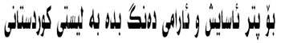
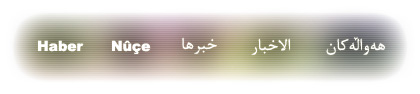

A LIVING SYMBOL OF FREEDOM
MUSTAFA BARZANI
14.03.1903 - 01.03.1979
The most prominent Kurdish national leader, Mustafa Barzani, was President of the Kurdistan Democratic Party (KDP) when he died on 1 March 1979 at Georgetown Hospital, Washington DC. Millions of Kurds and others mourned him. His memory will remain alive in the hearts of all Kurds who support the aims he struggled for all his life. He will remain a towering figure in the history of the Kurdish people. He remains the inspiration and ideal for today's Kurdish youth who are fired by the spirit, tenacity and resilience of the legend that never wavered in his commitment to the Kurdish struggle for Peace, Freedom and Democracy.
|
 |


What Does KDP stand for?
We are the Kurdistan Democratic Party - the party that takes the initiative and delivers not only messages but continued action. We believe in the rights and freedoms of all peoples, and we work to ensure that government creates the maximum positive impact on our daily lives while respecting each individual's right to privacy and non-interference. We believe in a government that encourages its people and provides a stable environment and opportunity for growth and prosperity. Our intent is to live with honor, peace, safety, freedom, and democracy on the soil of the Kurdistan Region - our own soil which belongs to us.
 These values have guided our progress in the past and our aspirations for the future. The KDP was founded on the most important of objectives: to seek and achieve basic human and national rights, including freedom of expression and association and democratic principles for all peoples. We support adherence to the principles of human rights and fundamental freedoms as set out in the Universal Declaration of Human Rights and other international covenants and protocols. We believe that all human beings have the capacity to transform the world in which we live. We work to ensure that our young generation is properly recognized as our greatest asset, and their development will lead the way for the Kurdistan Region. We want to give young people an effective voice and ensure that their interests and needs are continually at the forefront of party decisionmaking.
The Kurdistan Democratic Party has a long and proud record of promoting and supporting Kurdish culture and the arts.
We believe in democracy and the freedom of thought, speech and association. We believe in a just and humanitarian society in which the the rule of law and justice are maintained, and family values are respected highly.
The KDP adopts new policies and strategies which correspond to the political and economic climate in the Kurdistan Region and abroad. We work hard to support the Federal Republic of Iraq. We support the Kurdistan Regional Government, which could never have been created without the sacrifices of our people and our bravery and perseverance during difficult times.
We work hard to mobilize international support for our cause. The international community is beginning to recognize the atrocities of our past, and our friends abroad are building closer relationships with our people - relationships based on respect and mutually beneficial opportunities.
But the Kurdistan Region depends on support, guidance, and participation from its citizens. The KDP encourages citizens throughout the Region, regardless of ethnicity, religion, or party affiliation, to be active members of society. Our progress over the past several years has been astounding by any measure. Let us work together to continue our development and ensure a bright and prosperous future.

Kurdistan Parliament |